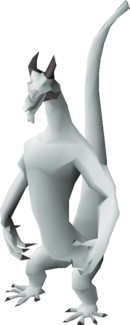
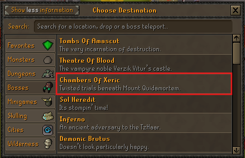
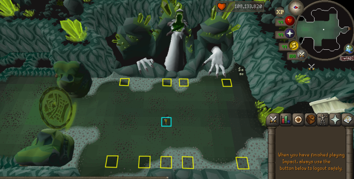
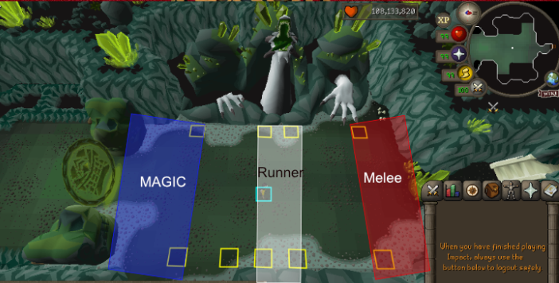
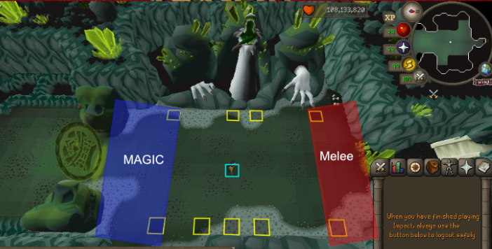
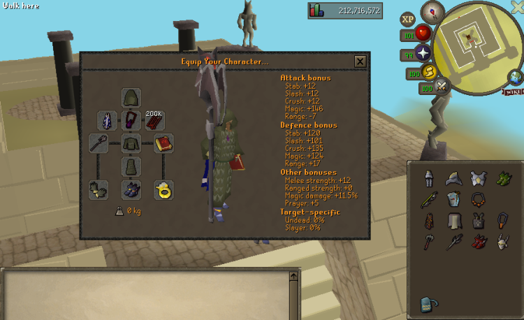
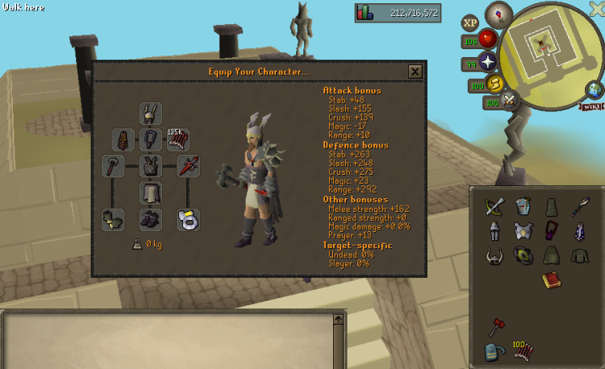
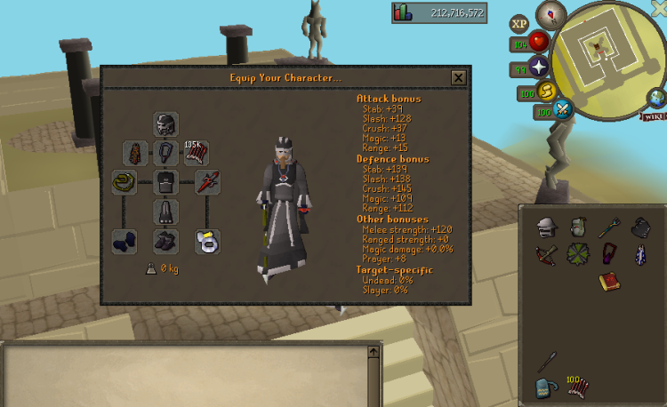

IMPACT GREAT OLM ENCOUNTER
Impact Chambers of Xeric Guide: Olm Roles and Phases
Impact Chambers of Xeric focuses on the Great Olm fight. Mark the role tiles before entering, assign mage-hand, runner and melee-hand positions, and learn how the hands, spheres and special attacks change across four phases.

- Access
- Spirit Tree at
::home - Category
- Bosses
- Main encounter
- Great Olm
- Phases
- Four
- Trio roles
- Mage, Runner, Melee
- Duo roles
- Mage and Melee
- Combat styles
- Magic, melee and ranged
- Core skills
- Movement, prayer and calls
CURRENT TELEPORT ROUTE
How to Get to Chambers of Xeric
The supplied Spirit Tree screenshot shows Chambers Of Xeric in the Bosses category. Follow that current interface rather than looking for a generic raid teleport.
- Teleport to
::home. - Use the Spirit Tree.
- Open the Bosses category.
- Select Chambers Of Xeric.
- Create or join a party when the live interface requires it.
- Enter the raid and continue to the Great Olm room.

PACK FOR THE MECHANICS
What to Bring Before Entering
The four screenshots are working examples, not fixed shopping lists. Cover the required responses first, then spend remaining inventory space on upgrades and supplies.
Bring every combat response
- Melee and magic options for the hands
- A ranged weapon for Olm's head
- Water Strike in the rune pouch where documented
- Runes, ammunition and charged equipment
- Food, Saradomin brews and prayer restoration
Match the tier you can control
- Oathplate, Bandos or Void armour
- Combat boosts for the styles you use
- Compact style switches in consistent slots
- Thralls in the documented top setup
- Higher-tier hand and head weapons
Make the team easier to run
- Extra sustain for longer learning attempts
- Role calls agreed before entry
- All room markers placed in advance
- A Phase 3 hand-health plan
- Enough free space to switch cleanly
SET THE ROOM UP FIRST
Mark the Olm Role Tiles Before Entering
Place the shown yellow markers before assigning roles. They create consistent references on the mage side, through the centre and on the melee side. The cyan centre marker helps orient the runner position.

Mage side — the left-hand side when facing Olm.
Centre and runner path — the middle reference used for head control.
Melee side — the right-hand side beside Olm's melee hand.
Regroup references — marked positions that help the team return after mechanics.
Markers are references, not immunity. Acid, crystals, lightning, fire walls and swaps can still force every role away from its usual tile.
ASSIGN SIDES BEFORE DAMAGE
Trio and Duo Roles in the Great Olm Room
Trio formation
Mage Hand, Runner and Melee Hand
The overlay shows broad working regions, not an exact movement script. Each player should know the hand or movement responsibility and still leave the area when a special attack demands it.

Control the left side
- Attack the magic hand from the left region.
- React to spheres, acid and crystal warnings.
- Avoid pulling hazards across the centre.
- Call remaining hand health in Phase 3.
Manage the centre
- Influence Olm's head movement through the centre.
- Keep spacing without dragging hazards through teammates.
- Call when movement or head control is disrupted.
- Help the team regroup for the swap mechanic.
Watch the right hand
- Attack the melee hand from the right region.
- Stop wasting attacks when the fist clenches.
- Track hand health and Phase 3 finish timing.
- Know the swap meeting tile near the thumb.
Duo formation
Split the Hands and Share the Runner Work
A duo keeps one player on the mage side and one on the melee side. Because no separate runner is shown, both players share movement, head control and regrouping while coordinating the Phase 3 finish.

| Format | Roles | Main coordination issue |
|---|---|---|
| Trio | Mage, Runner, Melee | Clear role separation and runner timing |
| Duo | Mage, Melee | Shared movement with no dedicated runner |
FOUR DOCUMENTED SETUP TIERS
Impact CoX Gear and Inventory Examples
Impact's Wiki presents four examples from best-in-slot Oathplate to budget Void. The images preserve every visible item, quantity, equipment slot and combat bonus; only the lower username strip was cropped.
| Setup | Account stage | Armour | Spell support | Switching | Main limitation |
|---|---|---|---|---|---|
| Oathplate | Endgame | Best-in-slot example | Thralls | High | Highest acquisition cost |
| Bandos high | Established | Bandos-based | Water Strike in pouch | Medium-high | More exposure than top gear |
| Bandos mid | Progressed | Accessible Bandos | Water Strike in pouch | Medium | Longer phases |
| Budget Void | Entry | Void switching | Water Strike in pouch | Lower cost | Smallest defensive margin |
Established endgame account
Best-in-slot Oathplate setup
- Main approach
- Strong hand and head damage with room for the required combat-style responses.
- Switches
- Melee, magic and ranged equipment for the hand and head phases.
- Spell support
- The Wiki describes this top setup as using thralls.
- Inventory priority
- Keep boosts, prayer restoration and healing accessible around the switches.
- Primary advantage
- Best damage and defence margin of the four documented tiers.
- Main limitation
- High acquisition cost, and extra switches still demand clean execution.
Experienced account
Medium/high-level Bandos setup

- Main approach
- Strong practical setup below the best-in-slot tier.
- Switches
- Retain all three style responses and prepare ranged before Phase 4.
- Spell support
- Water Strike from the rune pouch for the fire wall.
- Inventory priority
- Balance switches with enough sustain for longer phases.
- Primary advantage
- Good damage without requiring the full Oathplate setup.
- Main limitation
- Longer phases can consume more supplies than the top example.
Progressed account
Medium/low-level Bandos setup

- Main approach
- Use accessible multi-style coverage and keep the switch layout simple.
- Switches
- Prioritise required weapons before adding extra armour pieces.
- Spell support
- Water Strike from the rune pouch for the fire wall.
- Inventory priority
- Carry enough healing and prayer for increased time under mechanics.
- Primary advantage
- A practical bridge between budget learning and high-level runs.
- Main limitation
- Reduced damage makes prayer, movement and calls more important.
Entry account
Budget Void setup

- Main approach
- Use Void to cover combat styles with fewer armour pieces.
- Switches
- Keep the hand weapons and ranged head option in consistent slots.
- Spell support
- Water Strike remains important for the fire wall.
- Inventory priority
- Protect space for sustain because mistakes are more punishing.
- Primary advantage
- Lowest-cost documented starting point for learning the encounter.
- Main limitation
- Lower damage and defence reduce the margin for missed mechanics.
These examples show workable inventory structures, not the only valid loadouts. The Wiki names setup categories and a small number of spell or weapon priorities; unclear item icons are not treated as mandatory.
THE FIGHT AT A GLANCE
Great Olm's Four Phases
THE HAND CYCLE
Kill the Magic Hand First
Either hand can technically be attacked first, but the Impact Wiki recommends starting with the magic hand. Attacking melee first can cause Olm's fist to clench, preventing further damage to that hand.
- Take the assigned role position.
Use the trio or duo diagram and leave only when a mechanic forces movement.
- Start with the magic hand.
This avoids losing attacks to the melee-hand clench.
- Finish the remaining hand.
Keep switching prayers and responding to floor attacks rather than treating the phase as a damage race.
- Reset into the next phase.
Return to the agreed markers and call any supply or movement problem.
Role reminder: in a trio, the runner maintains centre control while each hand player stays on a side. In a duo, both players share the movement work.
COORDINATE HAND HEALTH
Kill Both Hands at Nearly the Same Time
Both hands can respawn if they are not finished close together. The Wiki gives under roughly 100 HP as the working benchmark for the melee hand before the team finishes the other side.
- Reduce the melee hand below roughly 100 HP.
Treat this as the source's recommended benchmark, not a guaranteed universal threshold.
- Stop before killing melee.
Call the remaining health so the other role knows it can finish.
- Kill the other hand.
The team should already know who makes the finish call.
- Return immediately to melee.
Finish the weakened hand before the pair has time to respawn.
RANGED HEAD PHASE
Switch to Ranged and Attack Olm's Head
Both hands disappear in Phase 4 and the head becomes the target. Use ranged. The Impact Wiki lists Twisted Bow as the preferred weapon, followed by Dragon Hunter Crossbow with Dragon ruby bolts (e).
Equip ranged early
Know where the switch sits before the phase begins.
Keep moving
Head damage does not remove floor, crystal or team mechanics.
Protect the route
Do not fill the remaining movement area with acid or cross through teammates.
READ THE CUE, THEN RESPOND
Olm Attacks, Prayers and Special Mechanics
Normal magic and ranged attacks
Green orb
Use Protect from Magic.
Crystal shard
Use Protect from Missiles.
The Wiki estimates that the matching protection prayer reduces damage by about 75–80%. Treat that as approximate source guidance, not guaranteed damage reduction on every hit.
Coloured spheres
Olm disables your current prayer before firing a sphere. React to the sphere name and attack type, not colour alone.
| Sphere | Prayer response | Documented effect |
|---|---|---|
| Red Aggro | Protect from Melee | Reduces accuracy |
| Green Accuracy | Protect from Missiles | Reduces damage |
| Purple Magic | Protect from Magic | Reduces magic damage |
Acid attacks
Floor hazard
Acid Spray
Acid pools remain on the floor, deal about 3–6 damage per tick according to the Wiki and can apply low poison. Leave the pool and avoid dragging your route through another role.
Targeted movement
Acid Drip
The targeted player leaves acid behind while moving. Keep a controlled path, preserve important role tiles and avoid crossing teammates.
Flame attacks
Green fireball
Deep Burn
The source describes repeated damage and stat reduction across several hits. Keep managing health and prayer while the effect resolves; no undocumented cure is assumed.
Water response
Fire Wall
Two walls can trap players and contact causes heavy damage. Use the documented Water Strike response to create an exit; the Bandos and Void examples carry it in the rune pouch.
Crystal attacks
Red flashing circle
Falling Crystals
A random player is marked before eleven crystals fall. Move away from teammates, leave the marked location and do not return until the attack has resolved.
Large landing crystal
Crystal Bomb
The crystal explodes after several seconds in an area of about 5×5 tiles. Move away from the landing point; damage increases closer to the centre.
Special attacks while the hands are present
Seedlings under players
Crystal Burst
Move off the seedling before it explodes and pushes you. Avoid being displaced into acid, a dangerous tile or another player, then return to the role position.
North–south path
Lightning
Contact disables prayer, binds and deals moderate damage. Beginners should avoid its path. Running through when it is about two tiles away is an advanced timing method from the source.
Flashing white circle
Swap or Teleport
Selected players are teleported and take more damage when far from the meeting point. Regroup at the tile in front of the melee hand's thumb, as documented by the Wiki.
WHAT EACH ROLE WATCHES
Role-Specific Reminders
Mage Hand
Track magic-hand health, hold the left-side position, react to spheres and move cleanly around acid and crystals.
Runner
Watch Olm's head direction, keep centre movement controlled, preserve team spacing and help coordinate the swap.
Melee Hand
Watch for the fist clench, track melee-hand health, call the Phase 3 finish and know the swap meeting location.
Duo Team
Split the hands, share the runner work, announce hand health and avoid copying each other's movement during hazards.
FIX THE CAUSE OF THE WIPE
Common Impact CoX Mistakes
- No markers: entering before the team has marked the role tiles.
- No role call: starting without mage, runner and melee responsibilities.
- Wrong layout: confusing the trio and duo formations.
- Melee first: losing damage when the fist clenches.
- Early Phase 3 kill: finishing one hand while the other still has substantial health.
- No head weapon: reaching Phase 4 without a ranged option.
- No Water Strike: having no documented answer ready for the fire wall.
- Wrong sphere prayer: reacting to the previous attack instead of the new sphere.
- Hazard overlap: dragging acid or crystals through teammates and role tiles.
- Missed regroup: staying far apart during the swap attack.
- Blind copying: copying a setup screenshot without understanding its switches.
BEFORE STARTING THE RAID
Impact CoX Pre-Raid Checklist
FAQ
Impact Chambers of Xeric Questions
How do I get to Chambers of Xeric in Impact?
Teleport to ::home, use the Spirit Tree, open Bosses and select Chambers Of Xeric. Enter the raid and continue to the Great Olm room.
How many phases does the Great Olm fight have?
The Impact Great Olm fight has four phases. The first three centre on the hands, while Phase 4 removes the hands and makes the head the ranged target.
Which hand should I kill first?
Kill the magic hand first in Phases 1 and 2. Either hand can be attacked first, but starting on melee can make the fist clench and prevent further damage to that hand.
What are the trio roles in Impact CoX?
A trio uses a mage-hand player on the left, a runner through the centre and a melee-hand player on the right. Each player still needs to react to prayers and special attacks.
How do duo positions work?
A duo splits the mage-hand and melee-hand sides without a dedicated runner. Both players share movement and head-control responsibilities and coordinate the Phase 3 hand finish.
Which tiles should I mark before fighting Olm?
Mark the yellow role positions shown in the supplied room diagram and use the cyan centre marker as an orientation reference. The markers guide positioning but do not protect you from attacks.
What gear can I use for Impact Chambers of Xeric?
Impact documents a best-in-slot Oathplate setup, two Bandos setups and a budget Void setup. Choose the tier you can control while keeping melee, magic and ranged responses plus enough supplies.
Why do I need Water Strike?
Water Strike is the documented water spell carried in the Bandos and Void rune pouches for opening an exit through Olm's fire wall. Check the pouch before entering.
How do Olm's coloured spheres work?
Olm disables your current prayer before firing a sphere. Use Protect from Melee for red Aggro, Protect from Missiles for green Accuracy and Protect from Magic for purple Magic.
How do I stop the hands from respawning in Phase 3?
Lower the melee hand to under roughly 100 HP, kill the other hand, then return immediately to finish melee. If one hand dies too early, the pair can respawn.
Which weapon should I use against Olm's head?
Use ranged against Olm's head. The Impact Wiki lists Twisted Bow first and Dragon Hunter Crossbow with Dragon ruby bolts (e) as the next option.
OPTIONAL EQUIPMENT UPGRADE
Learn the Roles Before Pricing Upgrades
Mechanic knowledge matters more than copying every item in a screenshot. Once your runs reveal a repeated equipment or supply bottleneck, check the current Impact price and stock.
Official sources, screenshots and verification
Access, setup tiers, Olm phases, prayer responses and special attacks were checked against the Impact Wiki Chambers of Xeric page. The current access route was checked against the supplied Spirit Tree interface, and role positioning was illustrated with the supplied in-game images. Content reviewed July 26, 2026.
The screenshots are working examples rather than mandatory inventories. Broad role overlays do not replace exact movement, and source values are presented as approximate where the Wiki does so. RSPS Gold Hub is independent and is not affiliated with or approved by Impact.